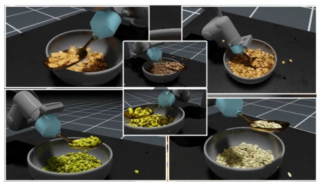
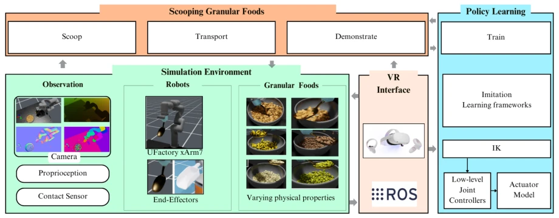
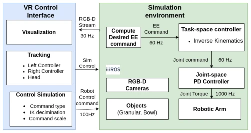
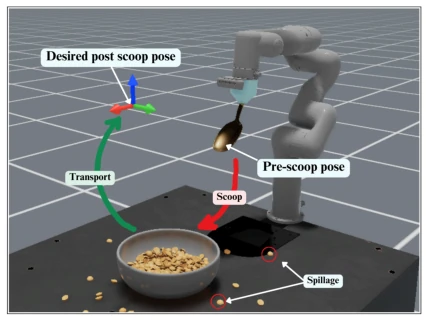

VERAGMIL: Virtual Environment for Scooping Granular Foods with Imitation Learning Models
Amanuel Ergogo, Diego Dall'Alba, Przemyslaw Korzeniowski abspdf
论文点评Review
这篇论文给 RAF 系统加了个“虚拟厨房”，用 VR 教机器人舀米粒。亮点是用了 VR 采集数据，比 3D 鼠标靠谱多了，BCQ 模型确实稳，成功率和泛化性都上去了。但吐槽一下：还在仿真里玩泥巴，没真机验证，Sim2Real 鸿沟还在；而且 spillage 比人高，离“喂饭”实用还有距离。Granular food 难搞是事实，但把问题全丢给 IL 有点偷懒，物理引擎再逼真也是假的，毕竟没考虑真实世界的摩擦不确定性。不过开源代码这点值得点赞，至少让后来人不用重新造轮子，算是给社区送了个玩具。
This paper incorporates a 'virtual kitchen' into the RAF system, utilizing VR to instruct the robot in scooping granular food. The highlight lies in using VR for data collection, which proves far more reliable than a 3D mouse; the BCQ model demonstrates stability, with both success rates and generalization capabilities improved. However, a critique is warranted: the work remains within the simulation sandbox, lacking real-robot verification, and the Sim2Real gap persists; furthermore, spillage rates remain higher than human performance, indicating a distance from practical 'feeding' utility. While handling granular food is inherently challenging, relying solely on Imitation Learning (IL) is somewhat of a simplification; no matter how realistic the physics engine appears, it remains artificial, particularly as it fails to account for real-world friction uncertainty. Nevertheless, the open-source code is commendable, at least allowing future researchers to avoid reinventing the wheel, effectively giving the community a toy.
Robotic Assisted Feeding (RAF) is crucial for individuals with disabilities, yet handling granular foods (e.g., rice, beans) is extremely challenging due to their dual solid-fluid characteristics and highly nonlinear behavior [1, 12]. Existing systems primarily target rigid foods, exhibiting poor adaptability to granular materials where traditional control strategies are difficult to model [9, 11]. Although Imitation Learning (LfD) can acquire human skills, data collection in physical environments is costly and quality assurance is difficult. Traditional data collection tools, such as joysticks or 3D mice, lack 3D visual feedback, hindering the capture of fine motor actions [32]. Existing simulators like Assistive Gym lack GPU acceleration or intuitive VR interfaces, making it difficult to simulate real granular dynamics [6, 15]. Therefore, a high-fidelity simulation combined with an intuitive VR data collection framework is required to address data bottlenecks and physical simulation accuracy, thereby lowering training barriers.

Fig. 1. VERAGMIL environment showing robotic arm (Ufactory xArm7) scooping and transporting various granular food items with different shapes, sizes, and physical properties, demonstrating adaptive manipulation of our robot-assisted feeding system.
The overall workflow consists of: VR interface for collecting human demonstrations -> training in a high-fidelity simulation environment -> evaluation of the IL policy. Core modules include: 1) Simulation Environment: Based on IsaacLab and PhysX 5, utilizing PBD to simulate granular physical properties (friction, density, etc.), supporting GPU acceleration [15, 39]. 2) VR Interface: Supports Oculus Quest 2, capturing 6-DoF controller data and providing RGB-D visual feedback, which is more natural than a 3D mouse [33, 34]. 3) Policy Learning: Compares three imitation learning algorithms: BC, BC-RNN, and BCQ; BCQ incorporates Q-learning to optimize future rewards, while BC-RNN handles temporal dependencies. Within the control loop, VR data is transmitted at 100Hz, IK calculation occurs at 60Hz, and joint PD control runs at 1000Hz to ensure smoothness. Data modalities include joint positions, end-effector poses, RGB-D images, etc. The training set comprises 4 types of food, while the test set includes 3 unseen food types to ensure generalization evaluation.

Fig. 2. Overview of the VERAGMIL framework, consisting of a VR interface and a RAF simulation environment with robot platforms, granular food items, and sensors.

Fig. 3. System architecture showing the VR interface, simulation environ- ment and the proposed control flow.
The experiment utilizes an xArm7 robotic arm and a spoon. The training set includes four types of food: Rice, Buckwheat, Barley, and Pasta; the test set includes three unseen foods: Peas, Beans, and Flakes. Three models (BC, BC-RNN, BCQ) and two data sources (VR Collection [VRI] and 3D Mouse [3DM]) are compared. Metrics include success rate, spillage amount, generalization capability, and task duration. Results indicate that BCQ under VRI achieves an average success rate exceeding 88% with the best generalization; VRI data is significantly superior to 3DM (success rate increased by 15%). However, the model's spillage amount remains approximately three times that of humans, and task completion time is slightly longer. This demonstrates the effectiveness of VR collection and BCQ, though Sim2Real still requires verification, and BCQ performs better than BC-RNN and BC on unseen foods.

Fig. 4. Experimental setup for evaluating VERAGMIL. The xArm7 manipulator robot scoops and transports granular food items, moving from the pre-scoop pose to the desired post-scoop pose, while monitoring spillage.